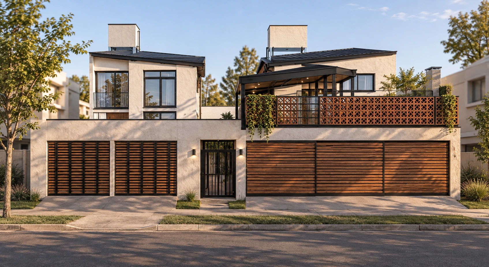

A&P INFRAESTRUCTURAS · PROYECTOS
Centro de
Proyectos.
Presentaciones y biblioteca técnica de proyectos. El contenido se incorpora a partir de material disponible y validado.
PROYECTO PRINCIPAL
SOLANA
SOLANA es un proyecto académico de arquitectura y construcciones desarrollado en Maipú, Mendoza. Propone un complejo habitacional multifamiliar cuyo diseño se encuentra en desarrollo. La implantación, organización espacial, relaciones funcionales y soluciones constructivas se documentarán a partir de los planos y modelos actualizados del proyecto.
Complejo habitacional SOLANA — Maipú, Mendoza, Argentina · Proyecto académico en desarrollo · Visualización arquitectónica del proyecto académico; no representa una obra construida.
Explorar SOLANA
La presentaci?n incluye renders, recorrido audiovisual y visor de planos PDF A3. La documentaci?n permanece en desarrollo acad?mico.